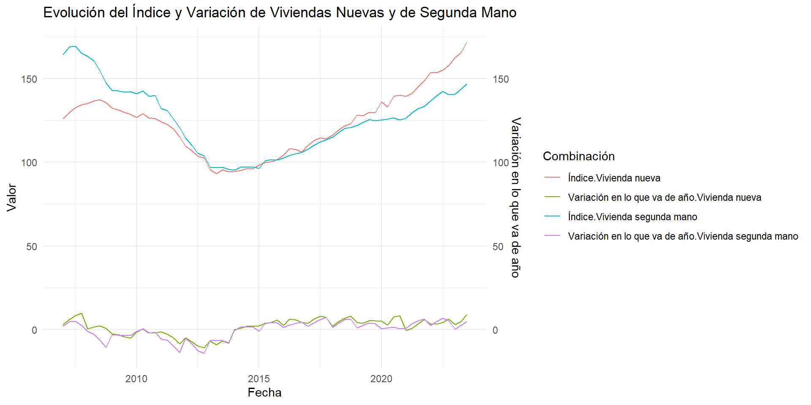
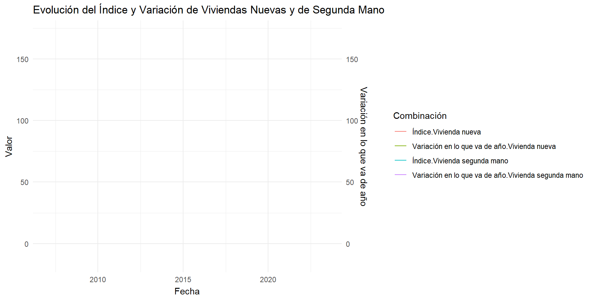
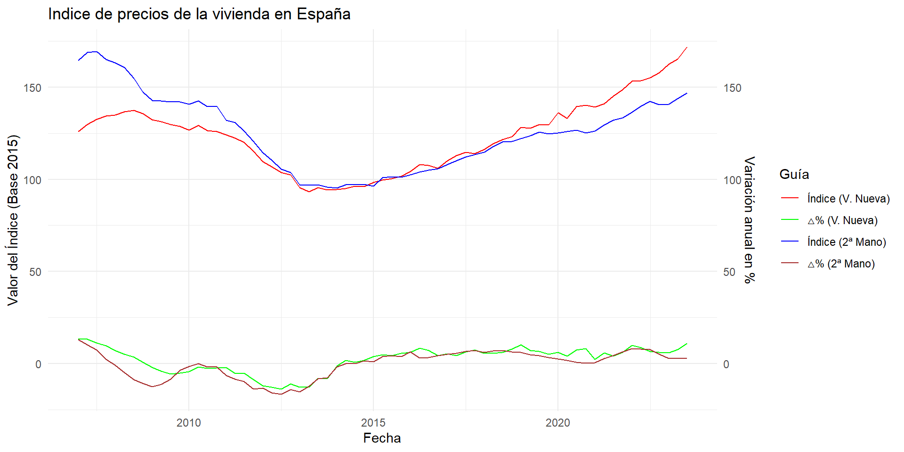
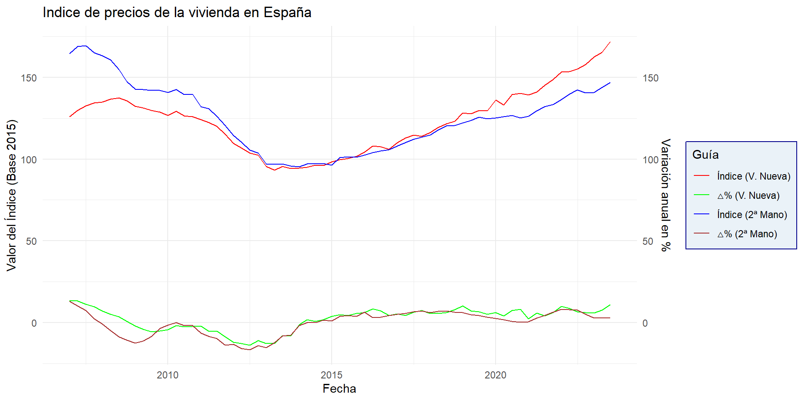
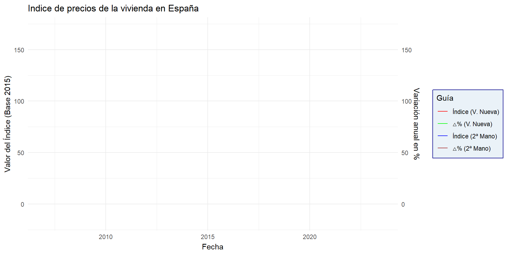
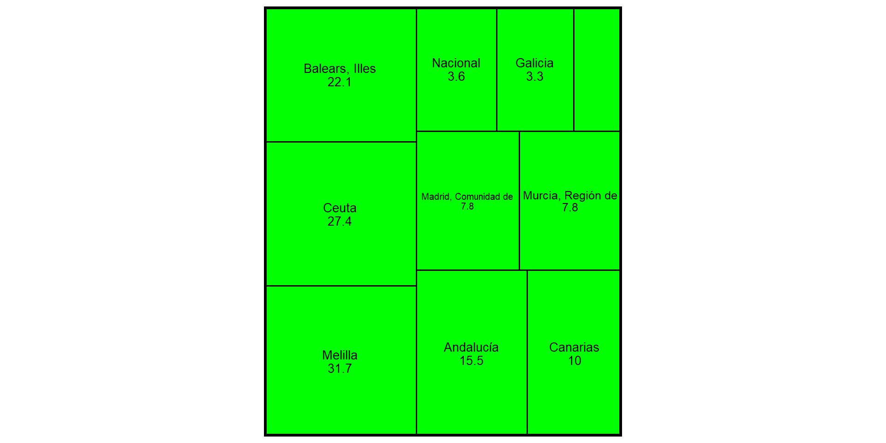
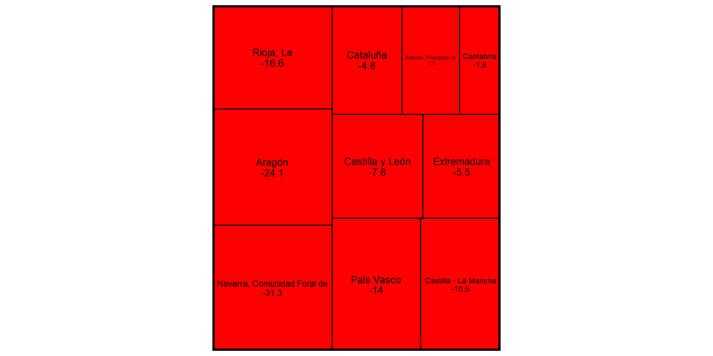
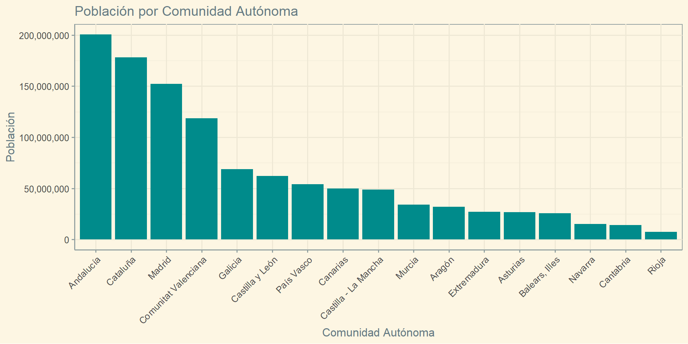

20/12/23
En este trabajao primero observaremos algunas variables macroeconómicas de España para situar al país en contexto. Después, veremos distintos datos demográficos para realizar algunas proyecciones a futuro sobre trabajo y estudios.
Los datos utilizados para la elaboración de este trabajo han sido extraídos del FRED pero, en su mayoría, del INE, tanto en formato excel como en px
Empezaremos poniendo a España en su contexto económico.
##PIB top5 CCAA
##PIB resto CCAA







Ahora vamos a ver algunos datos demográficos
#Población inmigrante por origen
#Población por CCAA
A continuación, tenemos un gráfico de barras
#> Age M F
#> 1 0-4 924878 874166
#> 2 5-9 1110682 1046828
#> 3 10-14 1259715 1182213
#> 4 15-19 1312515 1233843
#> 5 20-24 1268194 1189567
#> 6 25-29 1263026 1220525
#> # A tibble: 6 × 5
#> Age Gender Population PopPerc signal
#> <chr> <chr> <int> <dbl> <dbl>
#> 1 0-4 M 924878 1.95 1
#> 2 0-4 F 874166 -1.84 -1
#> 3 5-9 M 1110682 2.34 1
#> 4 5-9 F 1046828 -2.2 -1
#> 5 10-14 M 1259715 2.65 1
#> 6 10-14 F 1182213 -2.49 -1
#> NULLSlides hechas con Quarto